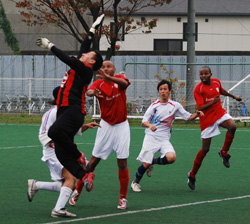

|
Hachioji Park, Monday 3rd November
With Lions almost back to full strength, BFC were assured a game!
Lions team talk after the last game against Geckoes, where wasted chances that could've killed off the game with 2 or 3 goals as early as 15 minutes, cost the Div 2 Champs dearly, as they slumped to their first defeat this season.
With Lions only able to choose from 50% of their squad due to injuries, absence, and work in the first 3 games, still, a 1-1-1 record was not bad to show.
Lions entered this game with a much stronger squad, the most significant being the return of arguably the best target man in the league, the tall and talented Zohair Sule, who played his first competitive game in over 5 months. His return gave Lions the cutting edge that they missed up-front, with virtually every ball played up towards the big strike, ended up giving the BFC defenders or goalkeeper a few things to think about.
BFC started strongly as a fierce shot from Carlos was met by a tremendous save from the infamous Orlando Torres who was also starting (and finishing the game) for Lions for the first time this season following an injury early on in the season.
Lions absorbed a lot of pressure early on from BFC, and with the late arrival of Evis 'the rock', in the heart of Lions defence, BFC had to pull something special to beat a resilient Lions defence that included Evis, Talal, Khaleel, and Birkia, and Orlando too!
BFC were playing a dangerously high offside trap that could've proved lethal with about 10 minute to go in the first half when Zohair held off the defender and dashed almost 30 yards, only to see his chipped effort clear the on rushing keeper, but also the bar.
A corner for BFC saw the ball fall nicely to Jon Day on the edge of the box, and the BFC Captain chested the ball, and hit a sweet shot on the half-volley, looking destined to the top near corner, only to be denied by Spider-man.
Another corner came in, and as Lions failed to clear, Carlos capitalised on a bouncing ball 5 yards out, and Lions were only watching in despair as the shot blazed across the goal and out to safety on the other side.
The second half saw the magnificent AbuBakr (known formerly for his Afro), who was still nursing a thigh injury, insisting to come on. His consistent brother Omar, gave way, and Abu ran the BFC midfield and defence ragged, ranging from tackles, to dribbles to assists.....even with 1 good leg, the guy was fantastic.

The second half saw Hideki, (who was supposed to play up-front alongside Zohair and a hardworking and clever Fisal), support the defence, and as he took the ball off an advancing BFC winger, he immediately released a magnificent through ball to Zohair, who broke the offside trap at the half way line, and as he advanced towards the gaol, Fisal also made up ground and was available for an easy tap in across the goal, but Zohair finished in style in the near post beating the helpless keeper, to put Lions 1-0 up.
BFC kept playing the high offside, and if Lions had their 2 missing pacey strikers Ahmed Gaafar and Ken Hersche on the day, BFC could've been punished severely.
BFC kept plucking away, and a great cross from the right winger, saw Jon Day beat Orlando to the ball, only to head the ball inches wide.
Evans also went through on the end of a beautiful ball from BFC, but his shot was securely held by the advancing Orlando.
A free-kick at the edge of the box saw Carlos eye-to-eye with Orlando, as the big BFC player hit a fierce shot straight at Orlando, who punched the ball away safely.
Evis was given the marching orders with 10 minutes to go for a tackle on James in midfield.
Lions were reduced to 10 players, but still looked dangerous on the counter, with the best chances falling to Acai, the Liberian striker who replaced Fisal. It wasn't Acai's day.....the striker could've had a brace on his good days, but all his shots were too tame for the BFC keeper.
The last 5 minutes saw BFC press hard, and a through ball that was cut across for Jon Day to tap in the last minute was overruled due to the ball rolling out of play a millisecond before the cross.
Lions Captain and influential player Gaafar Somi, was happy to watch from the sidelines, as his recent arrival from abroad still had its toll on the great midfielder, who adds another 20% to any team.
Ken Hersche and Ahmed Gaafar were also missing, and Lions are starting to have a nice headache of which performing players to drop or rotate for the upcoming games.
With Sima and Fahad breaking up every BFC build up in midfield, and every Lions player giving 110%, it is very difficult to pick the man of the match.
Man of the Match: Has to be the brilliant Zohair Sule......welcome back!
Match report by Hussein Shehata
|